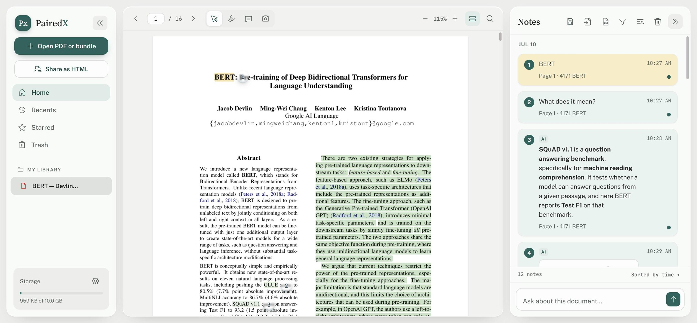
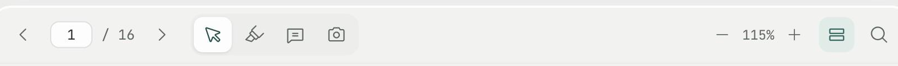
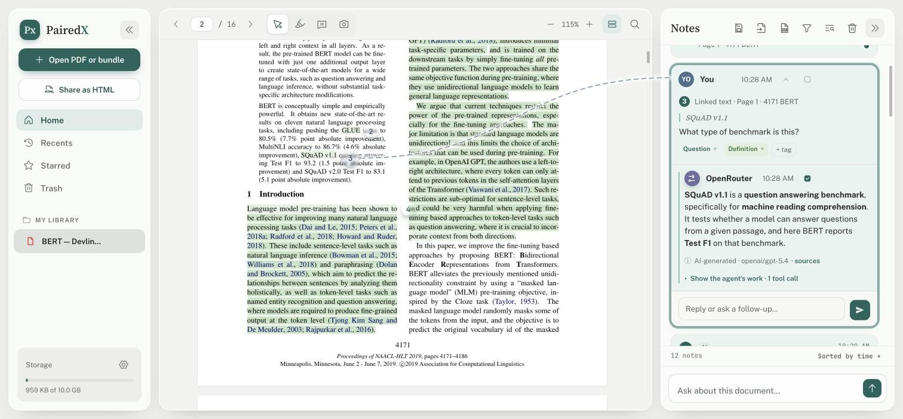
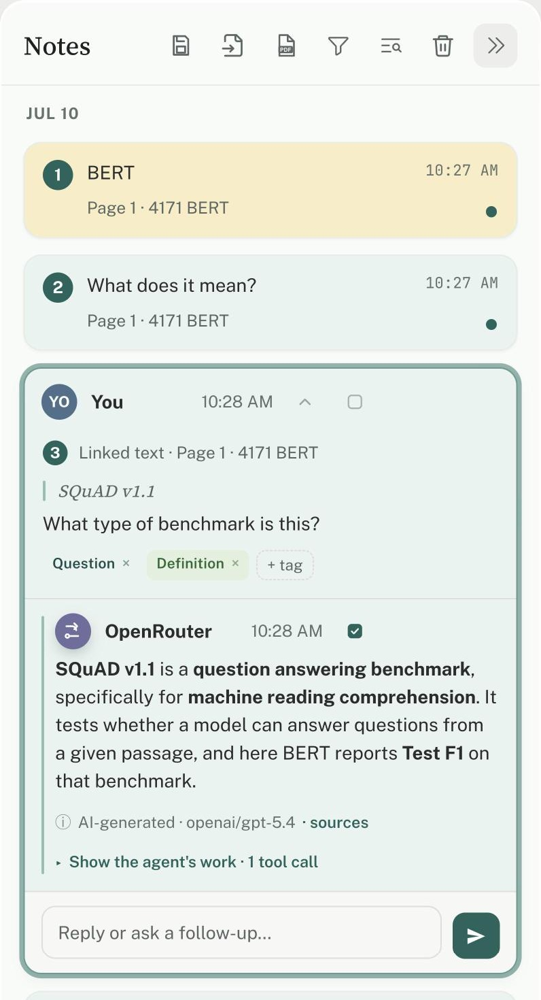
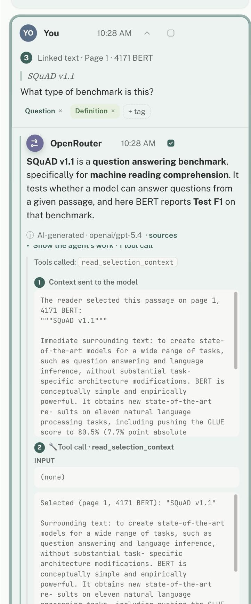
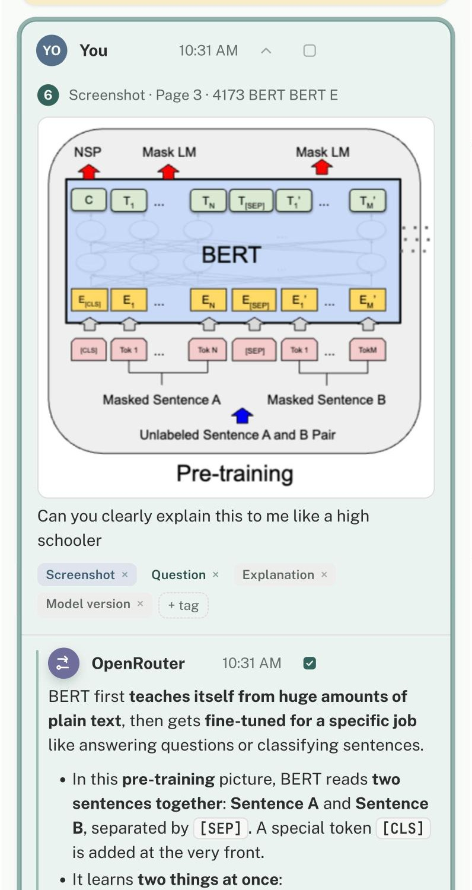
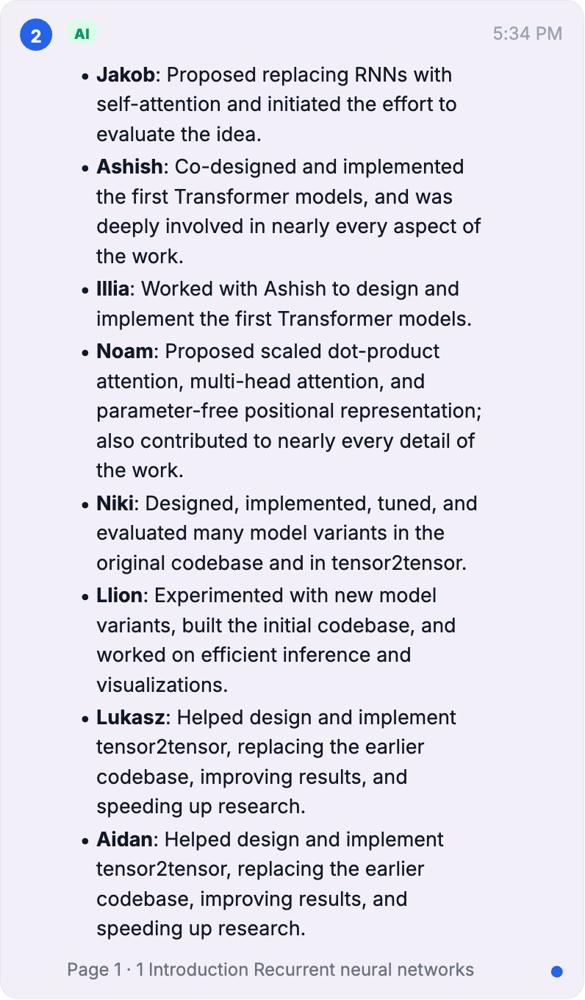
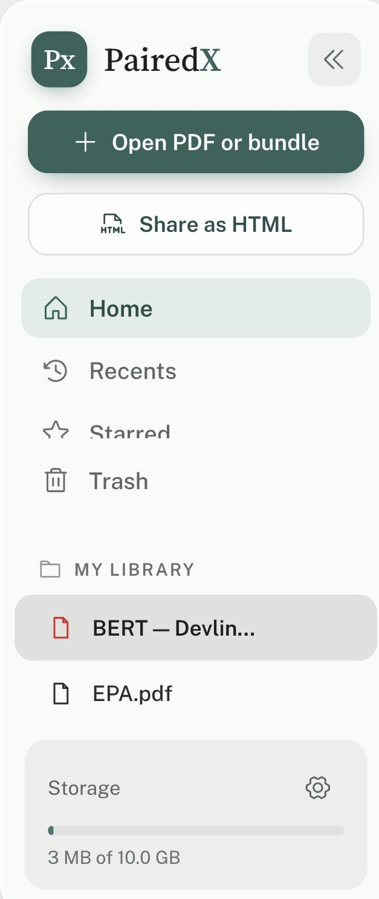
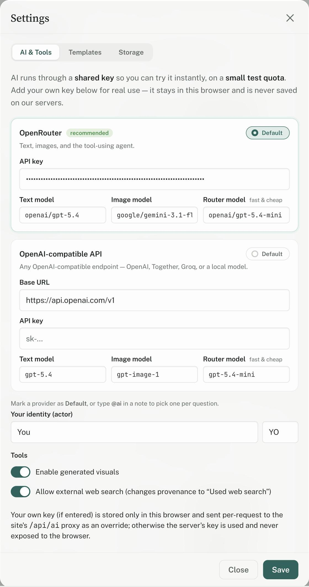
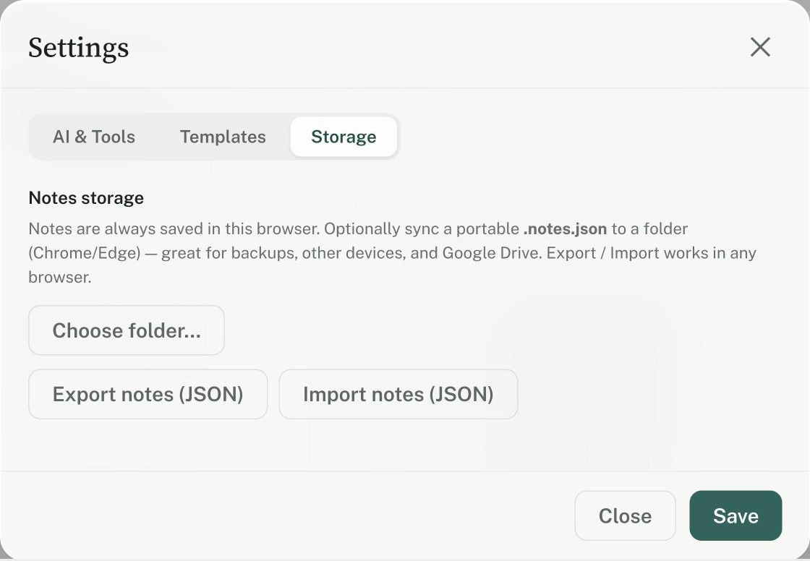

The whole feature set,
at a glance.
A source-linked AI reading workspace — every highlight, note, screenshot, and answer stays pinned to the exact spot it came from. Private, portable, yours.

Highlight text or box a figure.
Select text for a quick Highlight · Note · Ask AI popover, drop a point comment anywhere, or screenshot a figure/equation to ask about it directly.

Scanned? It reads the page for you — on your device.
Open an image-only PDF and PairedX notices there's no selectable text, then offers one-tap OCR that runs entirely in your browser — your file is never uploaded. It rebuilds a real text layer, so search, highlights, and the AI all work like a normal PDF.

Every note ties back to its exact spot.
A connector line joins each card in the panel to the highlighted passage or captured figure it came from — click a note and the reader jumps right to it.

Answers pinned to the source.
Ask about any selection; the answer is saved as a note linked to that passage, with rendered math & code and a provenance panel showing exactly what it used.

Watch every step it took.
For deeper questions the AI reads other pages, searches the document, scans the outline, or searches the web — and you can open “the agent's work” to see each call.

Capture a figure — or generate one.
Screenshot any figure or equation and ask about it. The AI can also generate an image or a text/ASCII diagram to explain a concept, grounded in the paper.

Show what matters on the card.
Check any message — say the AI's summary instead of your question — to show it in full on the collapsed card. Plus tags, resolve, filters, search, and sort.

A real multi-document library.
Home, Recents, Starred, and Trash. Star, trash, restore, or delete — the same PDF opened again is recognized by content (SHA-256) so its notes just re-attach.

Your model, your key.
OpenRouter (default) or any OpenAI-compatible endpoint. Your key stays in your browser and is sent per-request — never saved on a server. Toggle visuals and web search.

Tune every prompt.
Edit the system prompts — even the agent's tool descriptions — under Settings → Templates, then export or import your whole set as JSON.

Notes you own, on your machine.
Everything stays in your browser. Optionally sync a portable .notes.json to a folder (Chrome/Edge) so notes travel with your PDFs — great for Drive and other devices.

And everything else
The full list, grouped — every one of these ships today.
Reading
- Single-page & continuous scroll
- Zoom, page jump, page thumbnails
- Find in document (⌘/Ctrl-F)
- On-device OCR for scanned PDFs
- Collapse / resize panels
Annotating
- Highlight text
- Point comments
- Screenshot a region
- Selection popover: Highlight · Note · Ask AI
- Numbered pins in reading order
AI & agent
- Ask about a selection or the whole doc
- Tool-using agent (ReAct)
- Read page · search · outline · full read
- Web search · create visual
- Streaming answers & agent trace
- Generated images & ASCII diagrams
- LaTeX, Markdown & code rendering
Notes
- Compact ↔ expanded cards
- “Show on card” full-length preview
- Reply / follow-up in-thread
- Auto & manual tags
- Resolve, copy, edit, delete
- Edit question & re-ask AI
Notes panel
- Filters: all · unresolved · screenshots · AI · questions
- Search notes
- Sort by time or page
- Auto-scroll to active note
Library
- Home · Recents · Starred · Trash
- Star · trash · restore · delete
- Remove the bundled sample
- SHA-256 content addressing
- Storage meter
Open & attach
- Open a PDF, notes, or shared .html
- Multi-file & drag-and-drop
- Notes auto-attach by content
- “Found notes for this PDF” prompt
Share & export
- Share as self-contained .html
- Read-only viewer + made-with banner
- Re-open shared file to keep editing
- Export annotations to PDF
- Save / import notes JSON
Model & prompts
- OpenRouter or OpenAI-compatible
- Bring your own key (browser-only)
- Pick text & image models
- Editable prompt templates
- Editable agent tool descriptions
- Export / import / reset prompts
Storage & privacy
- Browser-only (IndexedDB + localStorage)
- Optional folder sync (File System Access)
- No cloud upload of your PDF
- No login, no tracking cookies
Your identity
- Set your name & initials
- Toggle visuals / web search
Open & free
- AGPL-3.0, self-hostable
- Static frontend + serverless AI proxy
- One-click Vercel deploy